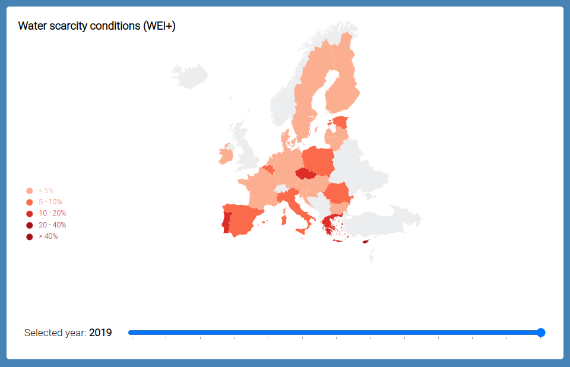
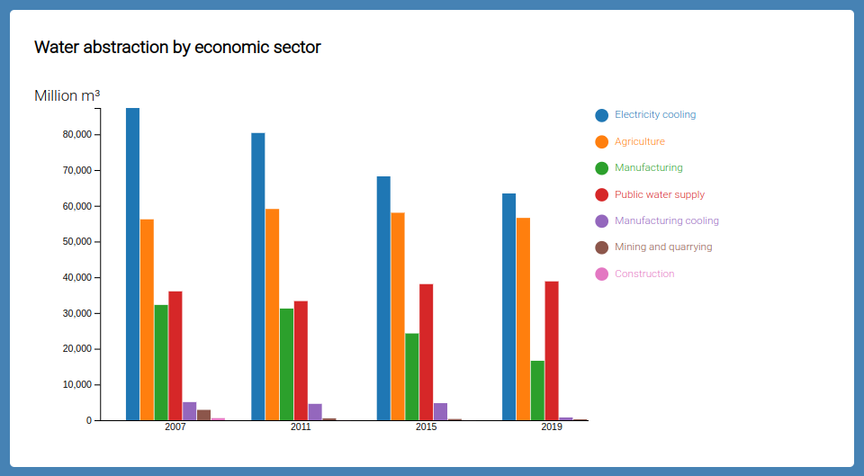
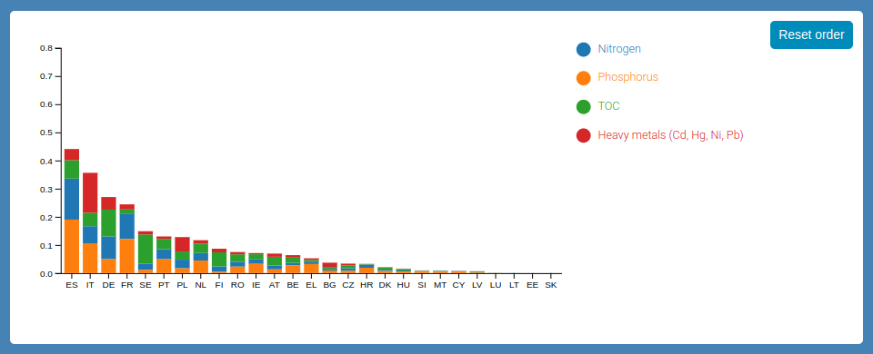
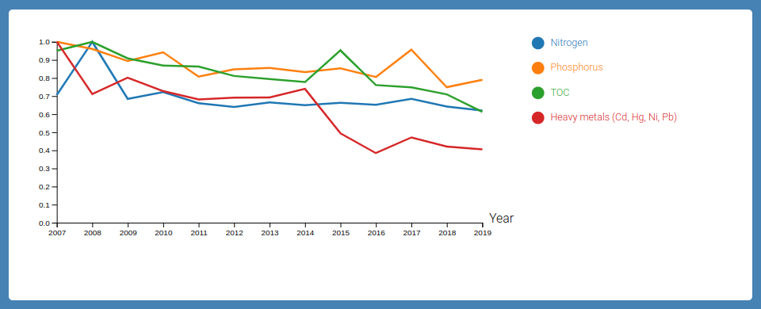

This website visualizes some insights about water utilization and pollution in EU countries from 2007 to 2019.
Water scarcity conditions

The water scarcity condition of a country can be estimated by means of the Water Exploitation Index plus (WEI+).
The WEI+, for a given territory and a given temporal interval, is calculated as the ratio between water consumption and the renewable freshwater resources.
WEI+ values above 20% indicate that water resources are under stress; values above 40% indicate that stress is severe and freshwater resources are overexploited.
The choropleth map shows the WEI+ per country for the selected year. The year can be selected using the slider below the map, and is shown on the left of the slider.
By moving the mouse over a EU member state, the WEI+ value for that nation is displayed.
Water abstraction by economic sector

The grouped bar chart shows the water abstraction per economic sector for the selected country.
By default, the entire EU data is visualized.
It is possible to change the country for which the water abstraction data is shown by clicking on it in the map.
To deselect a state and show the EU data again, it is sufficient to click on the selected country another time.
When a nation is selected, its name will be visible above the grouped bar chart and the map will highlight the selected country.
Industrial pollutant releases to water
Industrial activity causes the release of pollutants to water. In particular, this visualization focuses on two categories of pollutants:
- Nutrients that favor eutrophication: total organic carbon (TOC), nitrogen and phosphorous
- Heavy metals: Cadmium (Cd), Lead (Pb), Mercury (Hg) and Nickel (Ni)
The data (which is normalized to reduce the effects of different scale factors) is visualized in two ways: a stacked bar chart and a line chart.

The stacked bar chart reports, for the selected year, the amount of pollutant released by each country. Also in this case, the year is controlled by the slider below the map.
By default, the values are sorted by the total amount of pollutant, but it is possible to sort them by a specific pollutant by clicking on the corresponding label in the legend.
To reset the default sorting, it is enough to click on the "Reset order" button.

The line chart shows the trends of the amount of pollutants released by the selected country.
The nation for which the data is visualized can be selected by clicking on it in the map.
Data sources